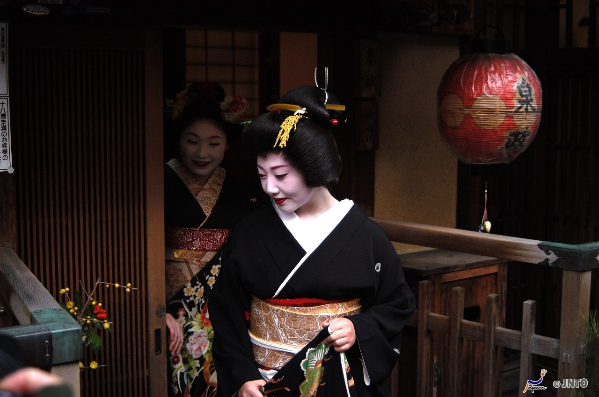

10/06 June
Kyoto là thành phố vẫn còn lưu lại các công trình kiến trúc và văn hoá từ xa xưa của Nhật Bản. Bài viết này sẽ tổng hợp các thông tin cần biết khi du lịch Kyoto như cách đi, các khu vực, các địa điểm thăm quan như chùa Kinkakuji, Kiyomizu...
Kyoto là kinh đô của Nhật Bản suốt hơn 1000 năm từ năm 794. Cho đến năm 1869 khi thủ đô của Nhật được chuyển về Tokyo thì Kyoto vẫn được xem là vùng đất trung tâm chính trị, văn hoá, tôn giáo. Kyoto có vai trò vô cùng quan trọng là kinh đô trong suốt 1000 năm của Nhật, hiện nay vẫn còn lưu lại nhiều đền chùa cổ kính được xây dựng vào thời gian đó, ngoài ra còn lưu giữ văn hoá lâu đời như Maiko, Geigi, không chỉ người nước ngoài mà cả người Nhật cũng bị thu hút. Các bạn hãy tìm hiểu trước về văn hoá, các địa điểm thăm quan của Kyoto và cùng trải nghiệm chuyến du lịch nhé.
Sau khi đến sân bay Narita, nếu các bạn không thăm quan Tokyo mà muốn đi thẳng đến Kyoto, các bạn hãy sử dụng tuyến Narita Express, đến ga Tokyo hoặc ga Shinagawa, sau đó các bạn hãy lên Shinkansen về hướng Kyoto.
Từ sân bay Narita đến Tokyo bằng tuyến Narita Express hết 2,820 Yên . Đến Shinagawa đến 2,990 Yên. Từ Tokyo, Shinagawa đến ga Kyoto bằng Shinkansen hết 13,080 Yên (ghế ngồi tự do). Thời gian khoảng 2,5 tiếng. Giá vé tổng cộng cho các chặng vào khoảng 16,000 Yên nhưng các bạn có thể sử dụng vé Japan Rail Pass có thể lên xuống tự do tuyến Narita Express, Shinkansen và toàn bộ các tuyến tàu điện, xe buýt trên cả nước (chỉ các tuyến do công ty JR vận hành). Nếu các bạn di chuyển cự li dài ví dụ như khi đi từ Tokyo đến Kyoto, các bạn nên mua trước vé Japan Rail Pass.
Nếu các bạn muốn đi thật nhiều nơi trong thành phố Kyoto, các bạn có thể sử dụng Vé 1 ngày (2 ngày) du lịch Kyoto. Đây là vé có thể lên xuống thoải mái các tuyến xe buýt thành phố Kyoto, vé các tuyến tàu điện ngầm thành phố, xe buýt Kyoto (trừ 1 số tuyến) trong 1 ngày hoặc 2 ngày liên tục không hạn chế số lần sử dụng, phần lớn các địa điểm thăm quan chính trong thành phố Kyoto có thể đi bằng vé này. Vé nào cũng có cả bản đồ hướng dẫn kèm các ưu đãi nhất định. Vé này có thể mua tại các quầy bán vé ga điện ngầm, quầy giao dịch các tuyến xe buýt thành phố, quầy hướng dẫn thông tin xe buýt thành phố và tàu điện ngầm, quầy giao dịch tuyến xe buýt Kyoto (Arashiyama, Takano), quầy hướng dẫn thông tin (Demachiyanagi), hoặc Toà nhà Kyoto ở Tokyo. Giá vé Vé 1 ngày Người lớn 1,200 Yên Trẻ em 600 Yên Vé 2 ngày Người lớn 2,000 Yên Trẻ em 1,000 Yên
Phương tiện thăm quan Kyoto thuận tiện nhất là xe buýt thành phố. Nếu các bạn sử dụng loại vé 1 ngày, các bạn có thể lên xuống thoải mái xe buýt chạy khắp thành phố Kyoto. "Vé 1 ngày chuyên dùng cho xe buýt thành phố"
"Vé 1 ngày chuyên dùng cho xe buýt thành phố" có thể mua tại quầy hướng dẫn thông tin xe buýt thành phố, tàu điện ngầm, quầy bán vé tháng, quầy bán vé tàu điện ngầm, hoặc trên xe buýt thành phố. Nếu các bạn muốn mua vé thì ngay sau khi xuống ga Kyoto, trước tiên các bạn nên đến quầy hướng dẫn thông tin xe buýt thành phố, tàu điện ngầm.
